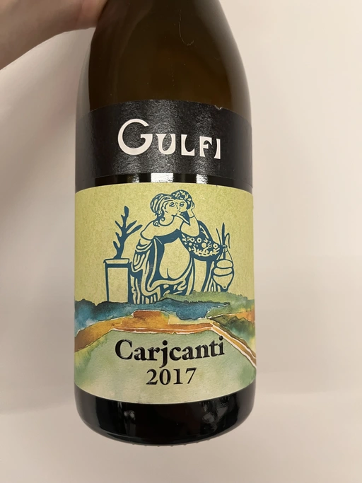

- Type
- White Still, Dry
- Producer
- Gulfi
- Vintage
- 2017
- Location
- Italy, Sicilia DOC
- Grapes
- Carricante
- Alcohol
- 12.5
- Sugar
- 1.5
- Price
- 937 UAH, 799 UAH
- Cellar
- 1 bottle
Ratings
2020-10-27 - 8.50
One more hit by Gulfi. My relationship with white wines can be divided into two periods: prior to tasting Carjcanti and everything after. So each bottle of this wine is a happy moment for me. Wonderful and elegant, white flowers, shells, apples. Great structure and acidity. You feel the oak, but it’s not vulgar. Long evolving aftertaste. Ah, this is tasty. Though I must admin, so far I like 2016 vintage more than 2017. But take my word, I will give it another chance, in a more private context.
2021-05-08 - 8.50
Haven’t tasted this beauty for a long time. Maybe because of fear to be disappointed after having a little bit more experience with white wines. And nope, still love it. Elegant bouquet of white flowers, shells and apples. Well structured and balanced, good acidity, long evolving aftertaste. Great!
2021-07-12 - 8.50
Alright, I admit some favoritism here. But hey, this wine is so beautiful and delicious. White flowers, shells, iodine, grapefruit and green apple. Elegant, multilayered, light and very sharp. I fear that I just need to buy a case of this wine (with a house on Sicily) and enjoy.
Related